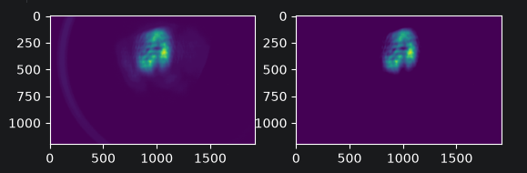

What we set out to do
Steer through the whole CLARA lattice with optimisation and RL, and get the closest sim2real match we can.
- One line,
cla_s02_sim_aper_01to the FEH screen: 64.4 m, 655 elements, 282 apertures. - A request arrives as four numbers — position and spot size
(μx, μy, σx, σy)
at
cla_feh_dia_scr_01— with the spot anywhere from 0.1 to 20 mm in each plane. - Every episode is a different day on the machine: its own beam, its own survey error, its own request.
- The agent sees what an operator sees: BPM centroids, and screens that cost a shot.
- Shots are the currency. Model time is free. That one sentence shapes the whole pipeline.
The line

Floor plan (VBC chicane, FEA dogleg), the lattice, and the x/y half-apertures, with the nominal ±3σ envelope. Pipe 17 mm; L4H iris 4.12 mm; TDC 5 mm.
Why it is not easy
- Two bottlenecks: the 4.12 mm L4H iris and the 5 mm TDC aperture in S07.
- With the nominal optics the vertical beam (±3σ ≈ 9 mm) is larger than both, so only 59% of the bunch reaches the screen — and it is lost in the middle of the line.
- Apertures make the objective a staircase: a particle is in or out, so there is no slope to follow.
- Two orders of magnitude of target spot size means two orders of magnitude of optics.
- And the model is not the machine.
VBC at 118.5 mrad; at the 131.7 mrad default it is 72%.

How we split it
| Francesco | Sim2real matching with tomography and beam optics, the VBC-on rematch, and the multi-fidelity BO pipeline: twin as low fidelity, machine as high fidelity. |
| Eiad | Beam optics and SVD: the reference tune, which quadrupoles and correctors matter for a given target, and per-node orbit response matrices cross-checked in Cheetah and xsuite. |
| Ivan | Numerical optimisation section by section — response-matrix correction, BO, RCDS, RCDS+BO and PPO, all on the same image budget. |
| Manuel | A robust measure for real screen images, and a filter for the captures worth using — a DALIA job over the whole 0.8 TB. |
| Amy | The framework and simulation environment, and a model-based RL agent built against it, driving Eiad’s SVD controls. |
Five people, seven workstreams, one weekend.
The pipeline
Everything that can happen in the model happens in the model. The machine is only asked when it has to be.
1. The episode
SimEnvdeals a new day: a realistic beam, the lattice with small perturbations, a survey error, and a request.- Cheetah 0.8.4, second-order tracking, apertures on, 200k particles for the reference work and 50k for the sweeps.
- The agent sees what an operator sees: BPM centroids, and screens that cost a shot.
Cost: the 282 aperture elements break Cheetah’s map fusion: a track costs 90 ms instead of 37. Everything downstream is paced by that.
2. Nominal optics from the lookup
- A matched family over a 12×12 grid of target sizes, 0.1 to 20 mm, log spaced. Each node sets all 46 quadrupole k1 values.
- 42 quadrupoles are a shared prefix that carries the beam through the apertures; the final focus does the rest.
- Re-matching removes the L4H and TDC losses outright: median transmission 92.7% with the VBC on, 97% with it off.
- No shots, no machine time. It hits the requested size to a fraction of a percent in its own model.

Cost: the family was matched with the VBC and L4H off. With the machine’s VBC on, the large-spot corner loses up to 80% of the beam.
2b. …which is why we rematched it
- VBC at the measured maximum compression into FEBE: 131.7 mrad, R56 = −57.6 mm.
- Keep the 42-quadrupole prefix, refit the 30 quadrupoles after the VBC per node — L-BFGS through differentiable Cheetah.
- Only a handful of magnets do the work: S06 Q01/Q02 for the VBC, FEA Q15/Q16 and FEH Q1/Q2 for the size. The rest are degenerate.
- Checked in both backends: all 144 nodes tracked with the same 200k bunch in Cheetah and in xsuite give a median transmission of 98.95% either way, and never differ by more than 1.1 points at a node.
| Before | After | |
|---|---|---|
| Median transmission | 89% | 99% |
| Median size error | 285% | 1.6% |
96 of 144 nodes at T ≥ 95% and within 5% of target.

3–4. Steering: SVD, then one shot
- SVD of the corrector-to-BPM response at the loaded optics ranks the corrector planes; invert the leading ones and correct in one shot.
- On the xsuite model: one BPM shot takes the orbit from 2–4 mm rms to about 0.15 mm.
- Fitting first is better still: stepping each quadrupole by 5 A recovers 99 µm rms quadrupole offsets to 6 / 15 µm (x / y) from BPMs alone.
- Typically 1 iteration in the pipeline, 4 in the worst case.
Cost: not enough on its own for 80–400 µm spots: the centroid at the screen still sits at 0.4–1.6 mm depending on the survey error, and the residual is dominated by quadrupole offsets. Good opening move, not an answer.
5. The focus control set
- The same trick again, but for focusing: SVD of d ln(rms size) / d k1 at every screen and the readout, over all 46 quadrupoles — and of the centroid response over all 58 corrector planes.
- Each magnet gets a score √(Σi si2 Vij2) over the modes holding 99% of the squared response, so the control set is ranked, not guessed.
- What survives the ranking is small: the five quadrupoles nearest the IP (FEA Q14/Q15/Q16, FEH Q1/Q2), the nearest correctors in each plane, and the two FEA sextupoles. Out of 46 + 58 knobs.
- 1.5 to 2.5 minutes per target on the error-free model. Zero environment steps.
Cost: the centroid SVD ranks the last two correctors near the bottom, because they move nothing but the final screen — which is exactly the property we need to place the spot. The ranking has to be read with the objective in mind; it is why placing the spot is its own step at the end.
Comparison and applicaiton of different optimization methods
Different methods applied to a sigle section

Response method applied segment-by-segment

6. Tweak the tune, one: multi-fidelity BO

- Low fidelity is the twin, high fidelity is the machine. 256 Sobol points over seven knobs in one batched Cheetah track: 1.5 s, where tracking them one at a time took 10 s.
- The machine is modelled as the twin’s GP plus a discrepancy — an offset, then a GP of its own once there are three readings.
- Each proposal maximises expected improvement of the benchmark mismatch, and sets the FEH correctors to cancel the centroid it predicts.
- It stops itself. When the expected improvement is worth less than the cost of one more step, it returns to the best reading it has seen.
- Purple boxes in the figure cost nothing: they are the error-free twin. Blue and teal are shots.
6. Tweak the tune, two: model-based RL
The twin
A differentiable Cheetah copy of the environment’s own lattice. System identification fits the episode’s beam — and optionally the survey error — to the shots taken so far.
The planner
CEM to explore, Adam to refine, anchored on the last measurement:
ŷ(δ) = ymeas + [ twin(k+δ) − twin(k) ]
A model wrong by a constant still predicts the effect of a move, and anchoring cancels the constant exactly.
The machine is 1% of the arithmetic. An episode spends 25 shots and 290k particle-tracks on the machine; the twin spends 30.7 M across 611 calls. That is the whole point — only the shots cost beam time.
Two things that mattered
- Steps measured in effect, not in units. One batched track calibrates every knob so that a step changes the reading by half a requested spot. 0.1 mrad is a huge kick near the injector and nothing a metre before the screen.
- Hard walls, soft gradients.
twin._aperturetakes its value from the hard edge and its gradient from a sigmoid. Blurring the wall outright moved the predicted loss from 0.00 to 114.7 and the fit walked off chasing it.
7. Reading the screen
- Threshold each frame at a tenth of its own peak, then take the intensity-weighted centroid and rms from the row and column sums — no full coordinate grids, four scalars off the device.
- Per-camera µm/pixel calibration for all 28 screens, so the numbers come out in metres.
- Run over the 0.8 TB of real CLARA HDF5 captures as a DALIA job.
- The same measure drives the agent in simulation. The benchmark scores the particle moments; the agent never sees them.
Cost: it costs accuracy and it costs speed. It is also the only version of the loop that could be moved onto the machine unchanged.

8. Size first, then position
- The focus works on the quadrupoles only, and scores the size and transmission only.
- Where the spot actually lands is settled afterwards, by the two correctors nearest the screen: a two-row least squares, one shot. Not a search.
- The request puts the spot anywhere within 2 mm of the screen centre — about eight requested spot sizes, and most of the score. It is worth a step of its own.
Cost: none that we found — and the alternative is expensive. Put both in one optimiser and a quadrupole will happily fix a 2 mm position error by distorting the optics, which it can do, and which costs exactly the size the focus just bought.
Which captures can you believe?
- Not every capture has a beam in it. Clean a weak one and nothing is left — but it still returns four perfectly confident numbers.
- So each file is judged on how its readings move across its captures: keep it only if the relative variation of all four of cx, cy, sx, sy sits between 0.1% and 30%.
- Below that, nothing is changing and the camera is looking at a wall. Above it, the measure is chasing noise.
- 5,732 capture sets come through the filter, with their means, spreads and ranges.

And section by section: what actually wins?
Same section (S04), same image budget, same objective — response-matrix correction, BO, RCDS, RCDS+BO and PPO, head to head.
| 9 images, 4 held-out beams | Objective |
|---|---|
| PPO, trained on one beam | 0.264 |
| Response correction (2 images) | 0.268 |
| RCDS, response directions | 0.279 |
| RCDS, plain | 0.283 |
| RCDS, plain, at 32 images | 0.091 |
- At a realistic image budget they are all within noise of each other. The budget decides the result, not the algorithm.
- Give it room and the picture changes: over five beams at 128 images, RCDS 0.126, RCDS+BO 0.119 — and response correction 0.017.
- What wins is using the vector residual and a model-based correction on every image. RCDS only ever sees a scalar.
Local screen objective on S04, lower is better. Not the whole-lattice FEH score.
Does it work? Multi-fidelity BO
| Score | Median | Within 10% | Within 25% | Steps | |
|---|---|---|---|---|---|
| Do nothing | 9.37 | 10.00 | 0% | 0% | 0 |
| Optics only | 6.50 | 6.22 | 0% | 0% | 1 |
| Stage A (optics, thread, steer) | 0.49 | 0.38 | 30% | 73% | 4.6 |
| Stage A + MF-BO | 0.32 | 0.25 | 77% | 97% | 10.2 |
30 days, seeds 1000–1029. Score is the benchmark score; lower is better.
- Stage A is five shots and does most of the work — 9.37 to 0.49 — because the optics come out of the model for free.
- MF-BO spends five more shots and takes the hit rate inside a tenth of the requested spot from 30% to 77%.
- On 12 deliberately lost-beam days (×5 misalignment) it still gets there: 0.37, 75% within 10%, 13 steps. Stage A threads the beam back first.
- Every episode finishes inside the 50-step budget — the longest was 32 — with beam on the screen.
Does it work? Model-based RL
| Score | Median | Shots | <50% | <25% | <10% | |
|---|---|---|---|---|---|---|
| Do nothing | 9.51 | 10.00 | 0 | 0% | 0% | 0% |
| Reference optics only | 6.12 | 7.25 | 1 | 0% | 0% | 0% |
| Optics + steering | 5.88 | 6.23 | 5.0 | 6% | 0% | 0% |
| Full pipeline | 1.44 | 0.78 | 25.6 | 81% | 72% | 25% |
| + survey error fitted | 0.95 | 0.66 | 25.2 | 91% | 84% | 41% |
32 episodes, seeds 1234–1265 — a different draw of days from the table before, so read the columns, not the two tables against each other.
- Read down it: the lookup takes a failed episode to 6.1 in one shot, steering is worth a little more, and the model-based tweak does the rest.
- Fitting the survey error is worth a third of the score, and takes the 10% hit rate from 25% to 41%. A misaligned quadrupole kicks and a misaligned sextupole focuses; no launch offset imitates either.
- It is still off by default. On this evidence it should not be.
The choices that cost us the most
- Two copies of the lattice. The twin was built from a stale copy of the line. The two agreed until the VBC was turned on and only one was updated — then the twin disagreed with the machine by 1.5 mm at the readout, and the planner spent whole episodes optimising a different accelerator. There is now a smoke test holding them to 10−4 µm.
- Matching against a machine we no longer had. The optics family was matched with the VBC and L4H off. Good physics, wrong machine; it took a 30-quadrupole rematch to get it back.
- Clipping the cost at the benchmark’s scale. The benchmark stops counting at ten spot sizes. An untuned machine sits at seventy, so a clipped cost is flat across the entire region where tuning happens.
- Trusting raw SVD directions. Handing RCDS the raw singular directions made it five times worse than plain coordinate axes (0.66 against 0.126). Making the directions boundary-aware fixed it. A good basis in the model is not automatically a good basis for a bounded line search.
- Splitting by workstream, not by interface. Everything converged in the last day. It worked — but see the first two bullets.
What we would do next
- Close the loop on stage 1. Re-run the optics lookup against the beam the system identification actually fitted, rather than the nominal beam it assumes, and reload. Another 40 s of model time, no extra shots. The size residual is the binding constraint, and this is the most promising thing we have not tried.
- The Dyna layer, started this afternoon. The twin is a free simulator, so it can also be the machine: randomise the latent, run the real agent against it, and clone what the planner decided. A millisecond proposal as a warm start, instead of twenty shots of search.
- Fit the survey error by default, not as a flag. It is worth a third of the score and we have the evidence now.
- Put the two tuners in the same room. MF-BO gets there in ten shots, the RL agent gets further on the hard days. Nobody has run them against each other on the same seeds.
- Mind the currents. Every knob here is in model units. The lattice and the current conversion disagree about the beam energy at the VBC by 8%, so S05–S06 would come out that much strong the day these settings become amps.